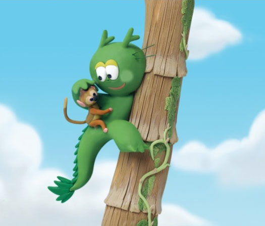
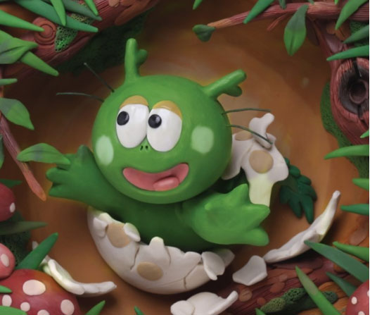
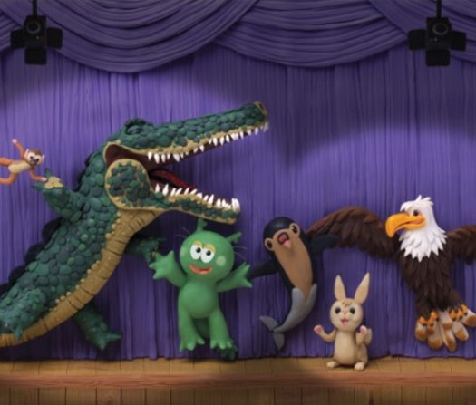
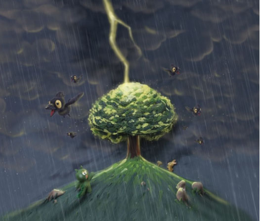
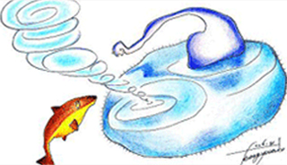
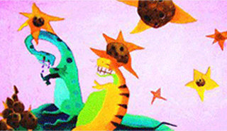
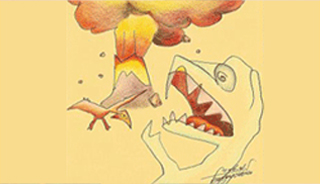
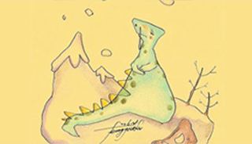

공룡이란?
1842년 영국의 고생물학자 리차드 오언이 이름 붙인 공룡(Dinosauria)은 그리스어로 ‘무서운’이란 뜻의 ‘deinos'와 ’도마뱀‘이란 뜻의 ’sauros'의 합성어 입니다.

공룡의 탄생!
최초의 공룡은 오늘날의 아르헨티나에서 중생대에 처음 출현했어요! 이 공룡은 몸길이가 1M밖에 안되는 작은 육식공룡이었답니다.

공룡의 분류!
공룡은 골반 뼈의 모양에 따라 크게 두 부류로 구분해요!. 악어와 도마뱀 같은 현생 파충류와 매우 비슷한 골반 구조를 가진 공룡을 용반류(도마뱀골반)라 하고, 새와 유사한 골반을 가진 공룡을 조반류(새골반)라 합니다.

공룡의 멸종!
6500만년 전, 공룡들은 다른 수많은 동식물과 함께 사라졌어요!
그 여러가지 멸종설이있는데 하나씩 알아가볼까요?
- 해수면 저하설
- 
해수면이 내려가면 종의 멸종이 일어나고 해수면이 올라가면 종이 늘어났다. 때문에 해수면 저하와 절멸의 상관 관계는 비교적 잘 맞아떨어지는 것처럼 보입니다. 이처럼 해수면 저하설이란 해수면의 변화가 생물의 대량 절멸 에 영향을 끼쳤다고 보는 가설입니다. - 운석 충돌설
- 
운석 충돌설은 현재 공룡의 절멸에 관한 정설로 인정받고 있습니다. 이 설은 1980년 캘리포니아 대학의 물리학자와 핵화학자가 이탈리아 구비오(Gubbio)에 있는 K-T(백악기와 제3기) 경계부에서 이리듐(iridium) 농집층을 찾아 논문을 발표하면서 힘을 받기 시작했습니다. - 화산 폭발설
- 
공룡의 절멸에 관한 얘기를 할 때면 흔히 운석 충돌의 증거로 이리듐(iridium)을 제시합니다. 화산 활동으로 인해 지하 심부에 존재하던 이리듐이 지각으로 올라올 수도 있다. 이처럼 K-T 경계에서 발견되는 이리듐이 지구 내부에서 온 것이라고 하는 설이 화산 폭발설입니다. - 기후 변동설
- 
1억 6천만 년 동안이나 지구 위에 군림하며 번영을 누렸던 공룡들이 때를 같이 하여 일제히 자취를 감춰 버린 사건은 신기한 수수께끼가 아닐 수 없습니다. 조산운동으로 인한 기온 저하설 또한 주장하고 있는 절멸 설 중의 하나 입니다.